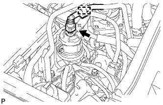
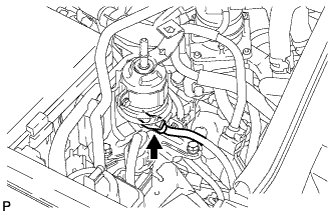
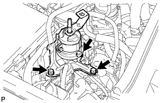

ТОПЛИВНЫЙ ФИЛЬТР > ЗАМЕНА |
| 1. СБРОСЬТЕ ДАВЛЕНИЕ В ТОПЛИВНОЙ СИСТЕМЕ |
Сбросьте давление в топливной системе (Нажмите здесь).
| 2. ОТСОЕДИНИТЕ ПРОВОД ОТ ОТРИЦАТЕЛЬНОГО ВЫВОДА АККУМУЛЯТОРНОЙ БАТАРЕИ |
| 3. ОТСОЕДИНИТЕ ТОПЛИВНЫЙ ШЛАНГ |
Отсоедините шланг от зажима.
|  |
Отсоедините топливный шланг (Нажмите здесь).
| 4. ОТСОЕДИНИТЕ ГЛАВНЫЙ ТОПЛИВНЫЙ ПАТРУБОК |
|  |
Отсоедините подающий топливопровод (Нажмите здесь).
| 5. СНИМИТЕ ТОПЛИВНЫЙ ФИЛЬТР В СБОРЕ |
|  |
Выверните 3 болта и снимите топливный фильтр.
| 6. УСТАНОВИТЕ ТОПЛИВНЫЙ ФИЛЬТР В СБОРЕ |
Установите топливный фильтр и закрепите его 3 болтами.
| 7. ПОДСОЕДИНИТЕ ПОДАЮЩИЙ ТОПЛИВОПРОВОД |
Подсоедините подающий топливопровод (Нажмите здесь).
| 8. ПОДСОЕДИНИТЕ ТОПЛИВНЫЙ ШЛАНГ |
Подсоедините топливный шланг (Нажмите здесь).
Подсоедините шланг к зажиму.
| 9. ПОДСОЕДИНИТЕ ПРОВОД К ОТРИЦАТЕЛЬНОМУ ВЫВОДУ АККУМУЛЯТОРНОЙ БАТАРЕИ |
| 10. ПРОВЕРЬТЕ, НЕТ ЛИ УТЕЧЕК ТОПЛИВА |
После технического обслуживания топливной системы проверьте ее на отсутствие утечек топлива.
Подсоедините портативный диагностический прибор к DLC3.
Включите зажигание (IG) и портативный диагностический прибор.
Войдите в следующие меню: Powertrain / Engine and ECT / Active Test / Control the Fuel Pump/Speed.
Убедитесь в отсутствии утечек топлива из топливной системы.
При обнаружении утечки топлива отремонтируйте или замените детали, если необходимо.
Выключите зажигание.
Отсоедините портативный диагностический прибор от DLC3.